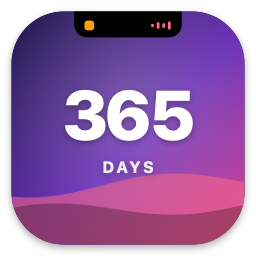
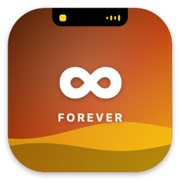

Two things at once.
Keep the music going while a timer runs. The second activity splits off into its own bubble, just like on iPhone. Click either one to open it, or swipe to swap them.
For every Mac, notch or not
DynamicNotch turns the notch into a Dynamic Island. Music, timers, a shelf for your files, fan control and alerts live right where you're already looking.
Which Mac do you have?
Try it
This is the real island, drawn from the app. Hover to peek, click to open, then switch tabs. On a trackpad, swipe with two fingers.
Click the island
Features
Every picture below shows the Mac you picked.
Keep the music going while a timer runs. The second activity splits off into its own bubble, just like on iPhone. Click either one to open it, or swipe to swap them.
Start a 1, 5, 10 or 25 minute timer right from the notch and watch it count down while you work. When it's done, the island lets you know.
Drag files, pictures or text to the notch to keep them close. Drag them back out into any app when you need them, or right-click to copy, open or show them in Finder.
Live CPU, GPU, SSD and battery temperatures with fan speeds. Want it quieter or cooler? Set your own fan curves for each part of your Mac.
Volume, brightness, charging, AirPods with their battery, Focus, your camera and microphone, and finished downloads pop out of the notch, then step aside.
Choose what the island shows and how it behaves. Settings look just like the island, down to the tabs hanging from the notch.
Music, Spotify, Safari, Chrome, Podcasts and more, with artwork and controls.
See at a glance when an app is using your camera or microphone.
Left, right and case, the moment they connect.
A quiet nod when a Focus turns on or off.
Progress as it happens, then a click to find the file.
Swipe to open, close and switch. Double-click to play or pause.
On Macs without a notch, DynamicNotch draws one in the menu bar.
No account, nothing sent anywhere. It all runs on your Mac.
Gestures
Use two fingers on the trackpad over the island. You can switch gestures off in Settings.
Opens the island.
Closes it, or dismisses an alert.
Switches tabs, or swaps the pill and the bubble when two things are running.
Plays or pauses without opening the island.
Film
Every Mac
On a MacBook Neo, an iMac or any Mac with a display, DynamicNotch draws a notch in the menu bar, so the island always has a home.
Questions
Any Mac running macOS 14 Sonoma or later. On a MacBook with a notch, the island grows out of it. On other Macs it draws its own notch in the menu bar.
Anything that shows up in Control Center's Now Playing: Music, Spotify, Podcasts, Safari, Chrome, VLC and more.
Fan control is optional. A small helper, which you install from Settings with your password, only sets speeds within each fan's own limits. A watchdog hands the fans back to macOS if anything goes wrong, and above 95 °C it always does.
Reading Now Playing from every app and controlling fans need access that App Store apps don't get. So DynamicNotch is downloaded directly.
No. There's no account, and nothing leaves your Mac.
Pricing
Every plan unlocks all of DynamicNotch. Try a year free for 7 days, pay monthly, or pay once and keep it.
€4.99/ month
Billed every month.
Subscribe monthlyBest value

€49.99/ year
Free for 7 days
Then €49.99 a year, just €4.17 a month. Save 17%.
Start free trial
€99.99once
One payment. No subscription.
Buy lifetimeEvery plan includes
Not sure yet? Download it and try everything free for 24 hours, no card needed.
Prices in euros. Checkout is handled securely by Stripe and shows your local currency.
Download DynamicNotch and use everything for 24 hours. No account, no card.
Download for Mac